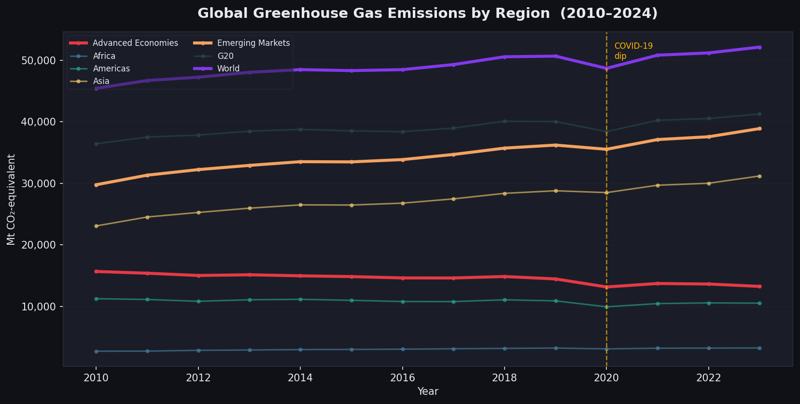
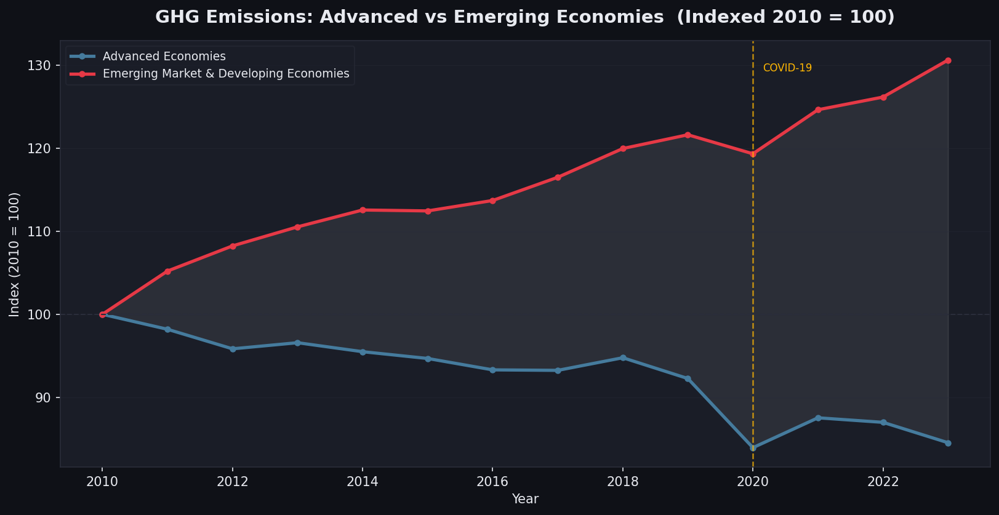

ESC to close
For this project we chose to look at how greenhouse gas emissions may be affecting our climate. Specifically, we wanted to visualize the increase in GHG emissions during recent years, and put this in context with the increase of severe weather patterns that are also becoming increasingly common. We hope you enjoy!

From this chart you can see that there has been a global increase in GHG emissions from 2010-2024. What is also interesting, is there is a singificant global dip during Covid-19 Pandemic. This is largely because factories and other large emitters of GHG were closed or slowed during this time. This emphasizes that this increased is largely due to human factors, the impacts of these factors are not fully known yet, but we can see later that weather events have been increasing recently too.

This visualization is interesting becuse it shows a trend that many people are not aware of with GHG emissions. On an indexed basis, you can see that GHG for developed countries are decreasing slowly. This reflects actions and investments around sustainable and renewable power generation. On the other side, developing countries, which are less advanced, are increasing GHG emissions, because they do not have the technology yet to rely on sustainable power